Выставки
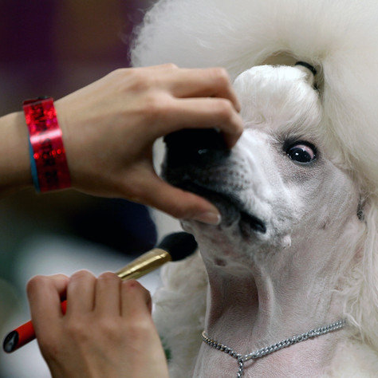
Предвыставочная подготовка собаки (косметика, ринговки, аксессуары)
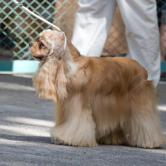
Готовимся к выставке собаки самостоятельно
Документы, необходимые для участия в выставках собак
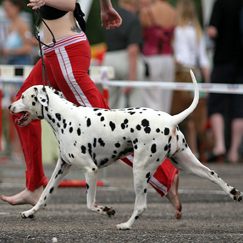
Выбираем хендлера
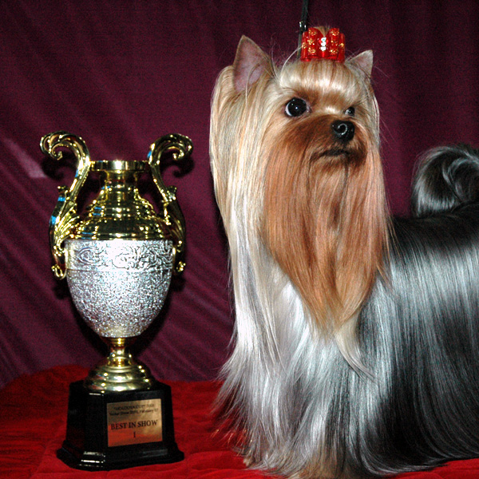
Правила удачного выступления на выставке
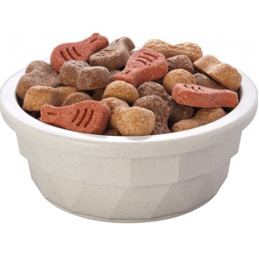
Лучшие рецепты выставочных подкормок
Международные системы выставок собак
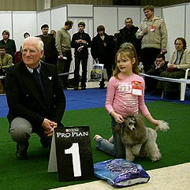
Как вести себя на выставке
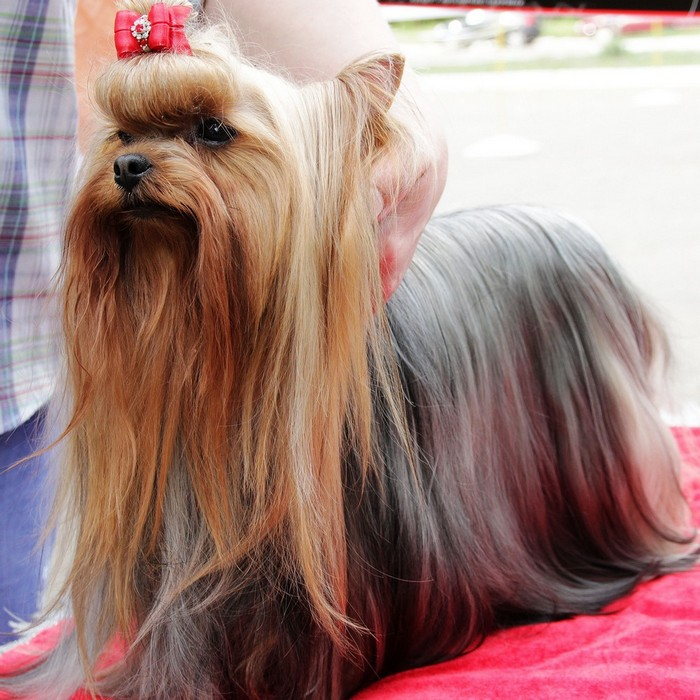
Что взять с собой на выставку
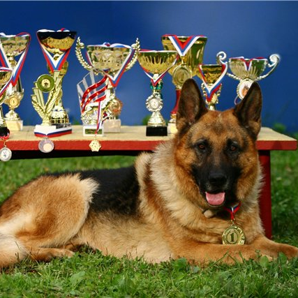
Порядок получения чемпионских титулов в странах Европы и СНГ
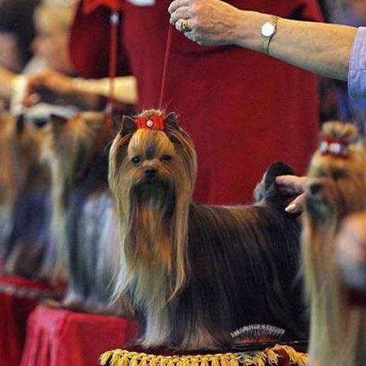
Как оценивают собак на выставках
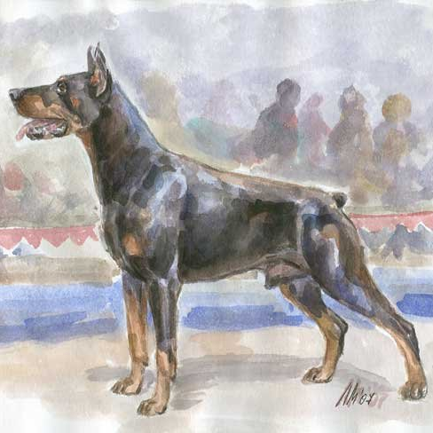
Выставочные регалии собаки: баллы, титулы, классы
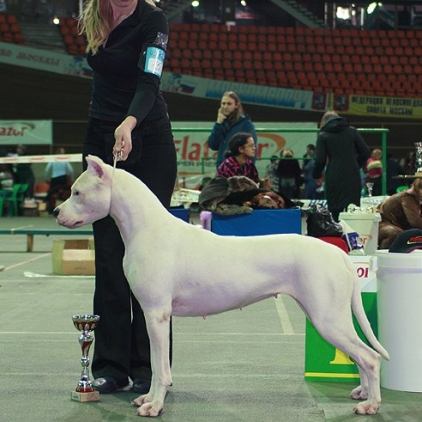
Хендлинг